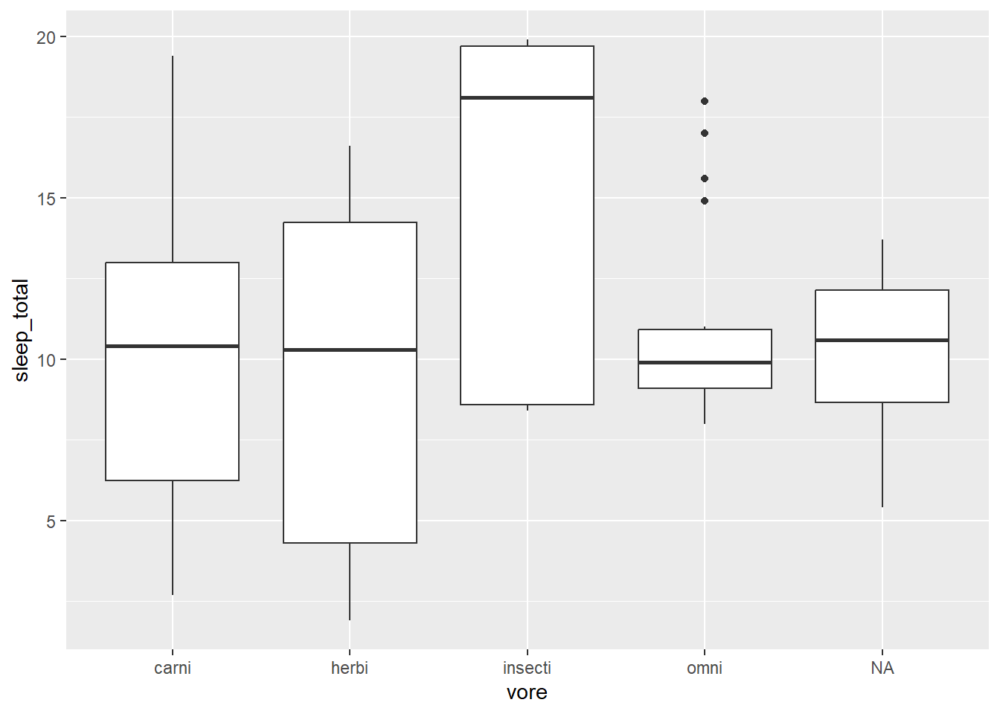

plot(msleep$sleep_total, msleep$sleep_rem)Plotting numerical data
There are several different approaches to creating plots with R. In this sections, we will mainly focus on creating plots using the ggplot2 package, which allows us to create good-looking plots using the so-called grammar of graphics. The grammar of graphics is a set of structural rules that helps us establish a language for graphics. The beauty of this is that (almost) all plots will be created with functions that all follow the same logic, or grammar. That way, we don’t have to learn new arguments for each new plot. You can compare this to the problems we encountered when we wanted to ignore NA values when computing descriptive statistics - mean required the argument na.rm whereas cor required the argument use. By using a common grammar for all plots, we reduce the number of arguments that we need to learn.
The three key components to grammar of graphics plots are:
- Data: the observations in your dataset.
- Aesthetics: mappings from the data to visual properties (like axes and sizes of geometric objects), and
- Geoms: geometric objects, e.g. lines, representing what you see in the plot.
When we create plots using ggplot2, we must define what data, aesthetics and geoms to use. If that sounds a bit strange, it will hopefully become a lot clearer once we have a look at some examples. To begin with, we will illustrate how this works by visualising some continuous variables in the msleep data.
Our first plot
As a first example, let’s make a scatterplot by plotting the total sleep time of an animal against the REM sleep time of an animal.
Using base R, we simply do a call to the plot function in a way that is analogous to how we’d use e.g. cor:
The code for doing this using ggplot2 is more verbose:
library(ggplot2)
ggplot(msleep, aes(x = sleep_total, y = sleep_rem)) + geom_point()
The code consists of three parts:
- Data: given by the first argument in the call to
ggplot:msleep - Aesthetics: given by the second argument in the
ggplotcall:aes, where we mapsleep_totalto the x-axis andsleep_remto the y-axis. - Geoms: given by
geom_point, meaning that the observations will be represented by points.
At this point you may ask why on earth anyone would ever want to use ggplot2 code for creating plots. It’s a valid question. The base R code looks simpler, and is consistent with other functions that we’ve seen. The ggplot2 code looks… different. This is because it uses the grammar of graphics, which in many ways is a language of its own, different from how we otherwise work with R.
But, the plot created using ggplot2 also looked different. It used filled circles instead of empty circles for plotting the points, and had a grid in the background. In both base R graphics and ggplot2 we can changes these settings, and many others. We can create something similar to the ggplot2 plot using base R as follows, using the pch argument and the grid function:
plot(msleep$sleep_total, msleep$sleep_rem, pch = 16)
grid()The syntax used to create the ggplot2 scatterplot was in essence ggplot(data, aes) + geom. All plots created using ggplot2 follow this pattern, regardless of whether they are scatterplots, bar charts or something else. The plus sign in ggplot(data, aes) + geom is important, as it implies that we can add more geoms to the plot, for instance a trend line, and perhaps other things as well. We will return to that shortly.
Unless the user specifies otherwise, the first two arguments to aes will always be mapped to the x and y axes, meaning that we can simplify the code above by removing the x = and y = bits (at the cost of a slight reduction in readability). Moreover, it is considered good style to insert a line break after the + sign. The resulting code is:
ggplot(msleep, aes(sleep_total, sleep_rem)) +
geom_point()Note that this does not change the plot in any way - the difference is merely in the style of the code.
Create a scatterplot with total sleeping time along the x-axis and time awake along the y-axis (using the `msleep` data). What pattern do you see? Can you explain it?Colours, shapes and axis labels
You now know how to make scatterplots, but if you plan to show your plot to someone else, there are probably a few changes that you’d like to make. For instance, it’s usually a good idea to change the label for the x-axis from the variable name “sleep_total” to something like “Total sleep time (h)”. This is done by using the + sign again, adding a call to xlab to the plot:
ggplot(msleep, aes(sleep_total, sleep_rem)) +
geom_point() +
xlab("Total sleep time (h)")Note that the plus signs must be placed at the end of a row rather than at the beginning. To change the y-axis label, add ylab instead.
To change the colour of the points, you can set the colour in geom_point:
ggplot(msleep, aes(sleep_total, sleep_rem)) +
geom_point(colour = "red") +
xlab("Total sleep time (h)")In addition to "red", there are a few more colours that you can choose from. You can run colors() in the Console to see a list of the 657 colours that have names in R (examples of which include "papayawhip", "blanchedalmond", and "cornsilk4"), or use colour hex codes like "#FF5733".
Alternatively, you may want to use the colours of the point to separate different categories. This is done by adding a colour argument to aes, since you are now mapping a data variable to a visual property. For instance, we can use the variable vore to show differences between herbivores, carnivores and omnivores:
ggplot(msleep, aes(sleep_total, sleep_rem, colour = vore)) +
geom_point() +
xlab("Total sleep time (h)")What happens if we use a continuous variable, such as the sleep cycle length sleep_cycle to set the colour?
ggplot(msleep, aes(sleep_total, sleep_rem, colour = sleep_cycle)) +
geom_point() +
xlab("Total sleep time (h)")Using the `diamonds` data, do the following:
1. Create a scatterplot with carat along the x-axis and price along the y-axis. Change the x-axis label to read "Weight of the diamond (carat)" and the y-axis label to "Price (USD)". Use `cut` to set the colour of the points.
2. Try adding the argument `alpha = 1` to `geom_point`, i.e. `geom_point(alpha = 1)`. Does anything happen? Try changing the `1` to `0.5` and `0.25` and see how that affects the plot.Axis limits and scales
Next, assume that we wish to study the relationship between animals’ brain sizes and their total sleep time. We create a scatterplot using:
ggplot(msleep, aes(brainwt, sleep_total, colour = vore)) +
geom_point() +
xlab("Brain weight") +
ylab("Total sleep time")There are two animals with brains that are much heavier than the rest (African elephant and Asian elephant). These outliers distort the plot, making it difficult to spot any patterns. We can try changing the x-axis to only go from 0 to 1.5 by adding xlim to the plot, to see if that improves it:
ggplot(msleep, aes(brainwt, sleep_total, colour = vore)) +
geom_point() +
xlab("Brain weight") +
ylab("Total sleep time") +
xlim(0, 1.5)This is slightly better, but we still have a lot of points clustered near the y-axis, and some animals are now missing from the plot. If instead we wished to change the limits of the y-axis, we would have used ylim in the same fashion.
Another option is to rescale the x-axis by applying a log transform to the brain weights, which we can do directly in
ggplot(msleep, aes(log(brainwt), sleep_total, colour = vore)) +
geom_point() +
xlab("log(Brain weight)") +
ylab("Total sleep time")This is a better-looking scatterplot, with a weak declining trend. We didn’t have to remove the outliers (the elephants) to create it, which is good. The downside is that the x-axis now has become difficult to interpret. A third option that mitigates this is to add scale_x_log10 to the plot, which changes the scale of the x-axis to a \(\log_{10}\) scale (which increases interpretability because the values shown at the ticks still are on the original x-scale).
ggplot(msleep, aes(brainwt, sleep_total, colour = vore)) +
geom_point() +
xlab("Brain weight (logarithmic scale)") +
ylab("Total sleep time") +
scale_x_log10()Exercise
Using the msleep data, create a plot of log-transformed body weight versus log-transformed brain weight. Use total sleep time to set the colours of the points. Change the text on the axes to something informative.
Boxplots
Another option for comparing groups is boxplots (also called box-and-whiskers plots). Using ggplot2, we create boxplots for animal sleep times, grouped by feeding behaviour, with geom_boxplot. Using base R, we use the boxplot} function instead:
# Base R:
boxplot(sleep_total ~ vore, data = msleep)
# ggplot2:
ggplot(msleep, aes(vore, sleep_total)) +
geom_boxplot()
The boxes visualise important descriptive statistics for the different groups, similar to what we got using summary:
- Median: the thick black line inside the box.
- First quartile: the bottom of the box.
- Third quartile: the top of the box.
- Minimum: the end of the line (“whisker”) that extends from the bottom of the box.
- Maximum: the end of the line that extends from the top of the box.
- Outliers: observations that deviate too much1 from the rest are shown as separate points. These outliers are not included in the computation of the median, quartiles and the extremes.
Note that just as for a scatterplot, the code consists of three parts:
- Data: given by the first argument in the call to
ggplot:msleep - Aesthetics: given by the second argument in the
ggplotcall:aes, where we map the group variablevoreto the x-axis and the numerical variablesleep_totalto the y-axis. - Geoms: given by
geom_boxplot, meaning that the data will be visualised with boxplots.
Exercise
Using the diamonds data, do the following: 1. Create boxplots of diamond prices, grouped by cut. 2. Read the documentation for geom_boxplot. How can you change the colours of the boxes and their outlines? 3. Replace cut by reorder(cut, price, median) in the plot’s aestethics. What does reorder do? What is the result? 4. Add geom_jitter(size = 0.1, alpha = 0.2) to the plot. What happens?
Histograms
To show the distribution of a continuous variable, we can use a histogram, in which the data is split into a number of bins and the number of observations in each bin is shown by a bar. The ggplot2 code for histograms follows the same pattern as other plots, while the base R code uses the hist function:
# Base R:
hist(msleep$sleep_total)
# ggplot2:
ggplot(msleep, aes(sleep_total)) +
geom_histogram()
As before, the three parts in the ggplot2 code are:
- Data: given by the first argument in the call to
ggplot:msleep - Aesthetics: given by the second argument in the
ggplotcall:aes, where we mapsleep_totalto the x-axis. - Geoms: given by
geom_histogram, meaning that the data will be visualised by a histogram.
Exercise
Using the diamonds data, do the following:
- Create a histogram of diamond prices.
- Create histograms of diamond prices for different cuts, using facetting.
- Add a suitable argument to
geom_histogramto add black outlines around the bars2.
Plotting categorical data
When visualizing categorical data, we typically try to show the counts, i.e. the number of observations, for each category. The most common plot for this type of data is the bar chart.
Bar charts
Bar charts are discrete analogues to histograms, where the category counts are represented by bars. The code for creating them is:
# Base R
barplot(table(msleep$vore))
# ggplot2
ggplot(msleep, aes(vore)) +
geom_bar()
As always, the three parts in the ggplot2 code are:
- Data: given by the first argument in the call to
ggplot:msleep - Aesthetics: given by the second argument in the
ggplotcall:aes, where we mapvoreto the x-axis. - Geoms: given by
geom_bar, meaning that the data will be visualised by a bar chart.
To create a stacked bar chart using ggplot2, we use map all groups to the same value on the x-axis and then map the different groups to different colours. This can be done as follows:
ggplot(msleep, aes(factor(1), fill = vore)) +
geom_bar()Using the `diamonds` data, do the following:
1. Create a bar chart of diamond cuts.
2. Add different colours to the bars by adding a `fill` argument to `geom_bar`.
3. Check the documentation for `geom_bar`. How can you decrease the width of the bars?
4. Return to the code you used for part 1. Add `fill = clarity` to the `aes`. What happens?
5. Next, add `position = "dodge"` to `geom_bar`. What happens?
6. Return to the code you used for part 1. Add `coord_flip()` to the plot. What happens?Saving your plot
When you create a ggplot2 plot, you can save it as a plot object in R:
library(ggplot2)
myPlot <- ggplot(msleep, aes(sleep_total, sleep_rem)) +
geom_point()To plot a saved plot object, just write its name:
myPlotIf you like, you can add things to the plot, just as before:
myPlot + xlab("I forgot to add a label!")To save your plot object as an image file, use ggsave. The width and height arguments allows us to control the size of the figure (in inches, unless you specify otherwise using the units argument).
ggsave("filename.pdf", myPlot, width = 5, height = 5)If you don’t supply the name of a plot object, ggsave will save the last ggplot2 plot you created.
In addition to pdf, you can save images e.g. as jpg, tif, eps, svg, and png files, simply by changing the file extension in the filename. Alternatively, graphics from both base R and ggplot2 can be saved using the pdf and png functions, using to mark the end of the file:
pdf("filename.pdf", width = 5, height = 5)
myPlot
dev.off()
png("filename.png", width = 500, height = 500)
plot(msleep$sleep_total, msleep$sleep_rem)
dev.off()Note that you also can save graphics by clicking on the Export button in the Plots panel in RStudio. Using code to save your plot is usually a better idea, because of reproducibility. At some point you’ll want to go back and make changes to an old figure, and that will be much easier if you already have the code to export the graphic.